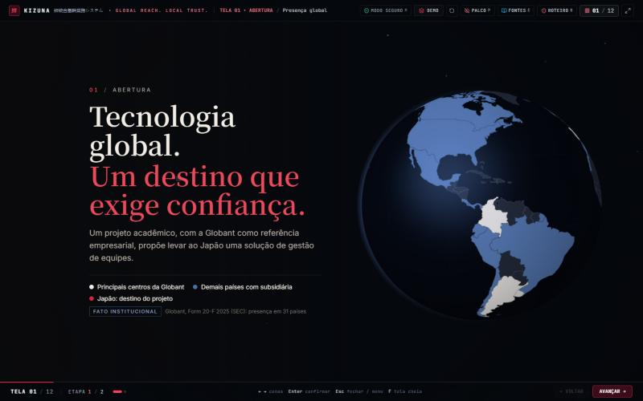
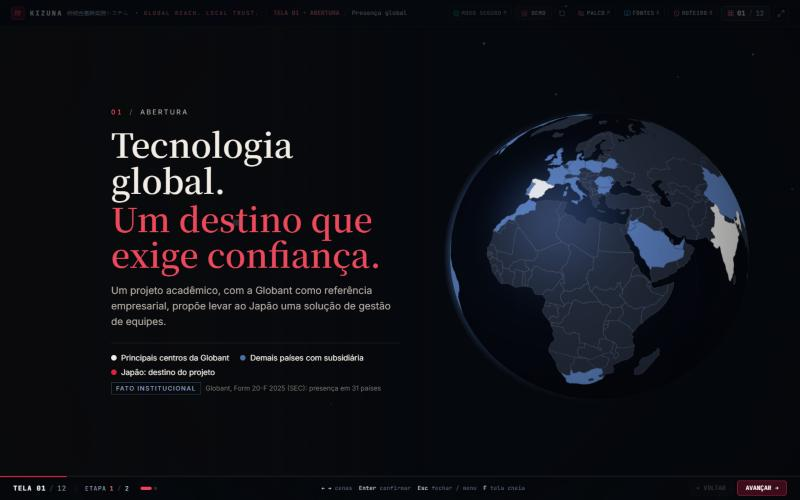
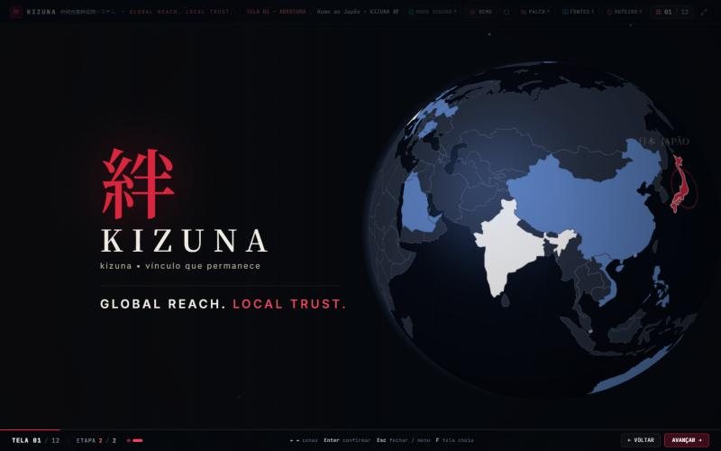
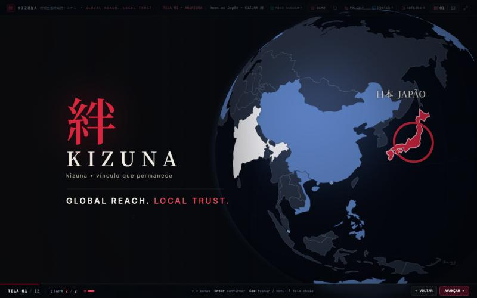
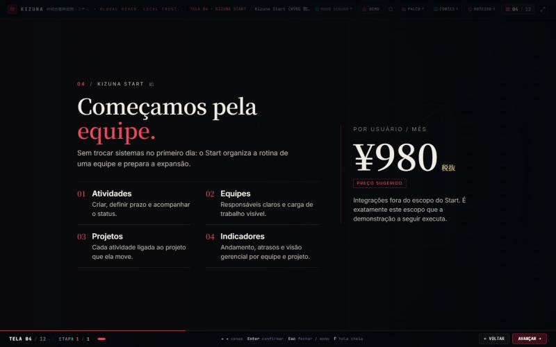
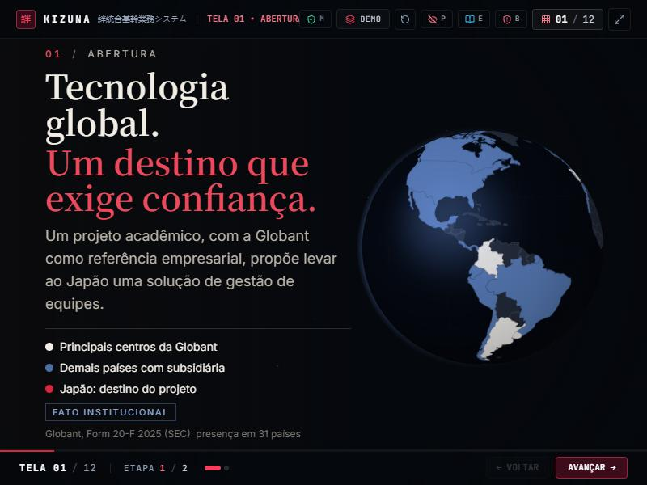
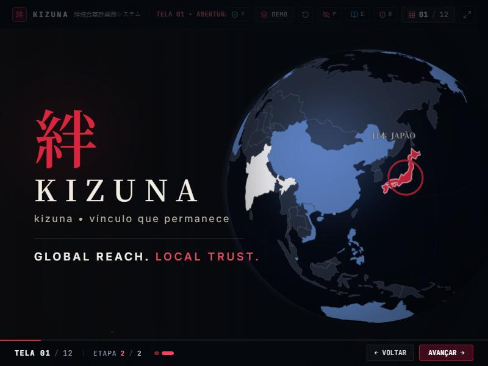
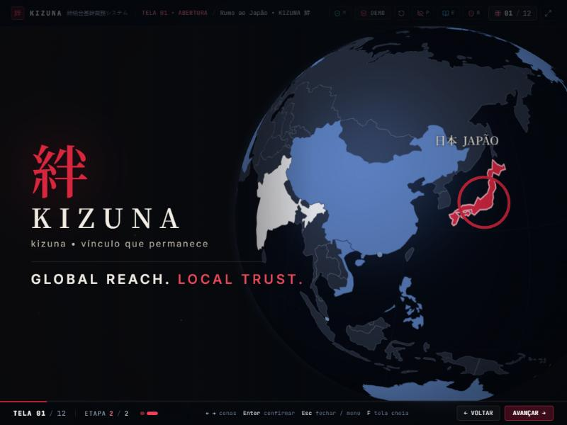
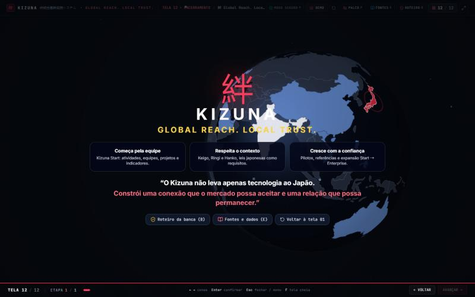

Etapa 8 • correção do globo e remoção do fio vermelho (telas 01 e 04)
Capturas em 1440 × 900, salvo indicação. O fio vermelho, os tubos e as linhas com nó foram removidos. A geografia passou a ser o elemento narrativo.
01.1 Antes (Etapa 7) → agora



01.2 Antes → rotação → Japão dominante



04 Tubo vermelho removido


Tamanhos 800 × 600 e 1024 × 768



Efeito colateral tela 12 usa o mesmo globo

Presença da Globant usada no globo
Fonte: Globant S.A., Form 20-F do exercício 2025 (SEC), Item 4.B e Exhibit 8.1. A página de escritórios do site da Globant bloqueia acesso automatizado (HTTP 403).
| Categoria | Países | O que significa |
|---|---|---|
| Principais centros | Argentina, Índia, Colômbia, Espanha, Uruguai | Tabela "Facilities and Infrastructure": centros de desenvolvimento/entrega e gestão de clientes. |
| Subsidiária registrada | Brasil, Chile, Equador, Peru, Costa Rica, México, Panamá, Canadá, EUA, Belarus, Bulgária, Dinamarca, Reino Unido (Inglaterra e País de Gales), França, Alemanha, Irlanda, Itália, Luxemburgo, Moldávia, Países Baixos, Polônia, Portugal, Romênia, China, Hong Kong*, Vietnã, Filipinas, Singapura*, Austrália, África do Sul, Marrocos, Arábia Saudita, Emirados Árabes Unidos, Jordânia (filial) | Presença societária (Exhibit 8.1). O 20-F diz que há escritórios e funcionários em 31 países, mas não lista quais; por isso não chamamos de escritório. *pontos no mapa. |
| Mercados atendidos | — | O 20-F informa só regiões de receita (América do Norte, América Latina, Europa, New Markets). Não aparecem como países. |
| Japão | Japão | Destino do projeto Kizuna. Não há subsidiária da Globant no Japão; o 20-F registra só 28% de participação na Genexus Japan. |